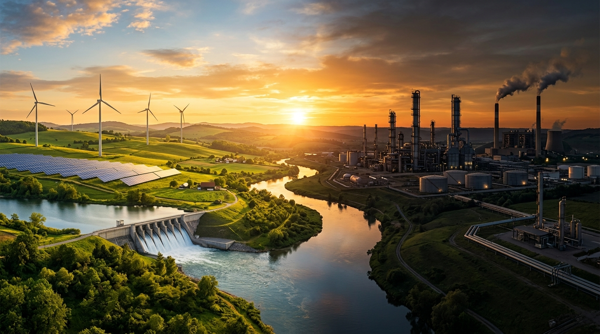
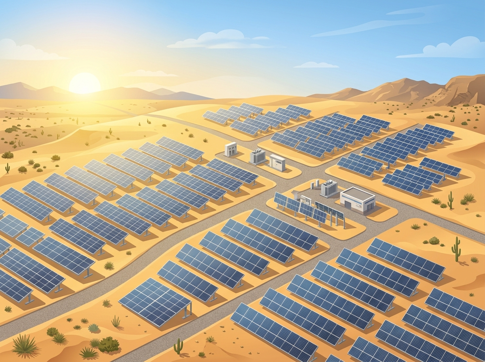
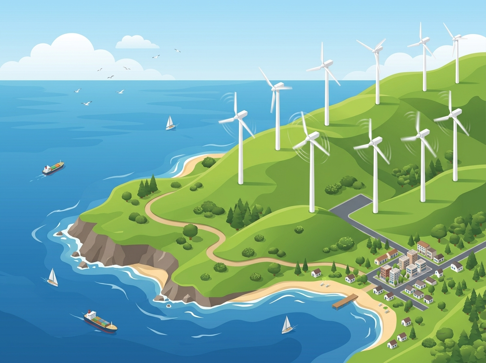
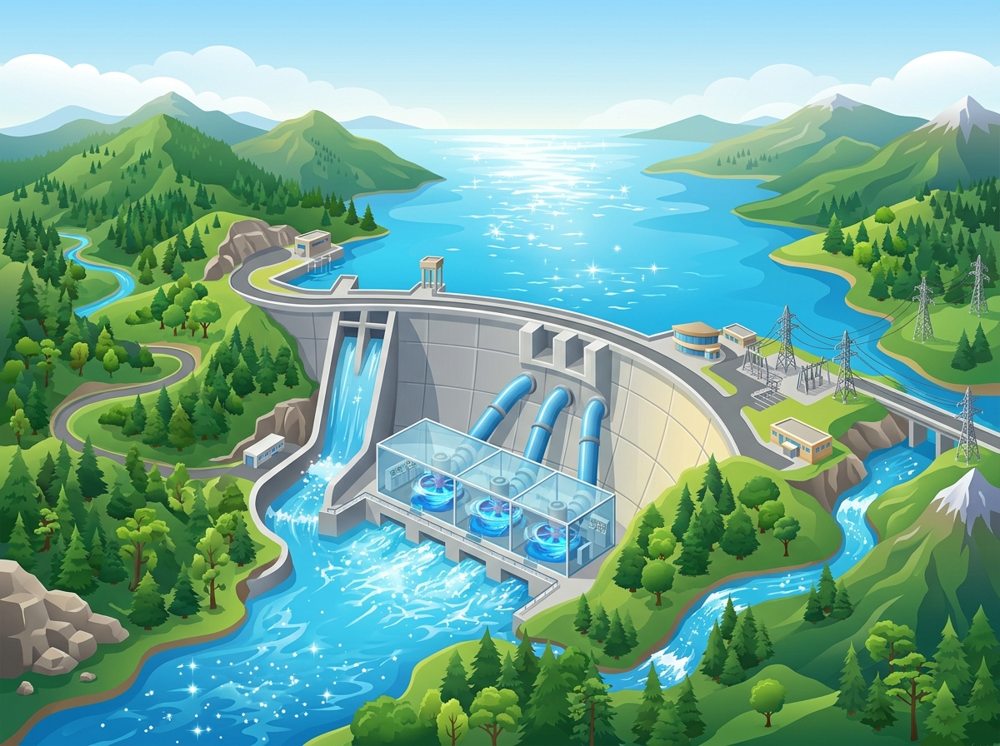
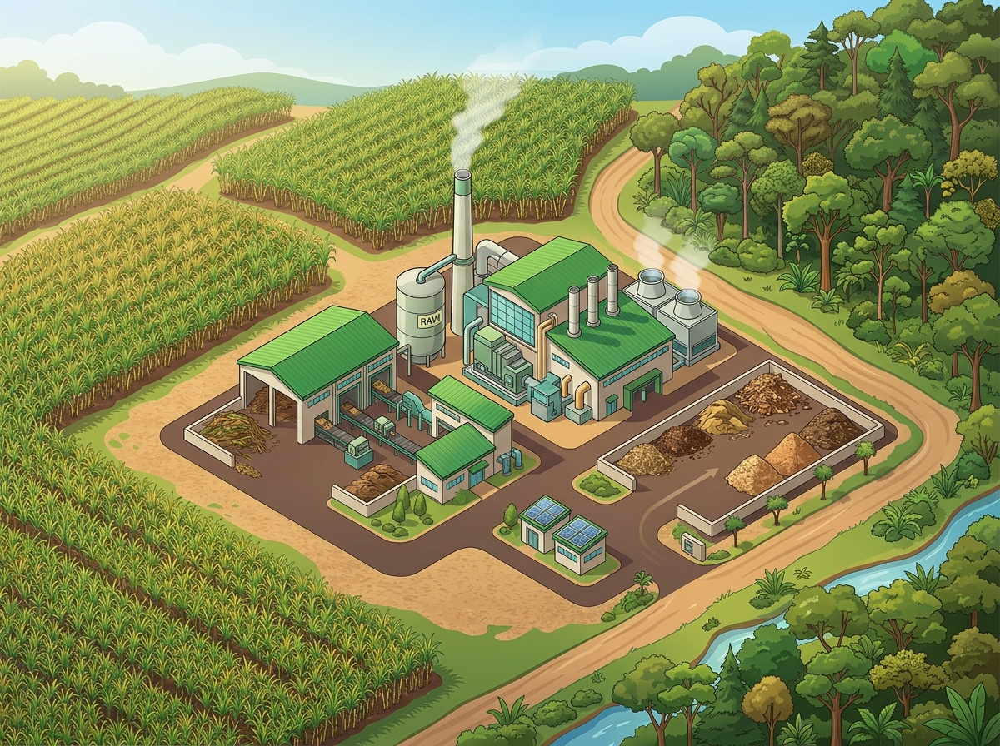
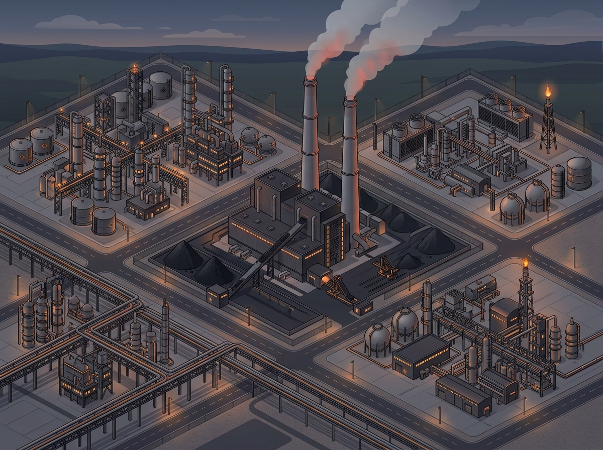

Um guia completo e comparativo sobre as fontes de energia que movem o país e o mundo. Dados oficiais da EPE, Ministério de Minas e Energia e IEA — sempre com os devidos créditos.
Embora frequentemente confundidas, esses dois conceitos descrevem universos diferentes. Entender essa diferença é essencial para compreender o cenário energético brasileiro.
Representa todas as fontes de energia utilizadas por um país para atender às suas necessidades — incluindo transportes (gasolina, diesel, etanol), processos industriais, aquecimento e geração de eletricidade. É a visão mais abrangente do consumo de energia.
É um subconjunto da matriz energética. Refere-se exclusivamente aos recursos utilizados para a geração de energia elétrica — aquela que chega às tomadas, ilumina cidades e movimenta indústrias. No Brasil, é predominantemente renovável graças às hidrelétricas.
💡 Por que a diferença? A matriz energética inclui combustíveis fósseis usados em transportes (gasolina, diesel), o que reduz sua renovabilidade para ~50%. Já a matriz elétrica é dominada por hidrelétricas, eólica e solar, alcançando 88,2% de fontes renováveis.
Dados do Balanço Energético Nacional 2025 (BEN 2025), publicado pela EPE — Empresa de Pesquisa Energética, vinculada ao Ministério de Minas e Energia. Ano-base: 2024.
📈 A geração solar fotovoltaica cresceu 39,6% em 2024, atingindo 70,7 TWh. A capacidade instalada de energia solar alcançou 48.468 MW, um aumento de 28,1% em relação a 2023. Solar e eólica juntas representaram 23,7% da geração total.
Fonte: EPE — Balanço Energético Nacional 2025, Relatório Síntese (publicado em 29/05/2025)
Provêm de fontes naturais que se regeneram continuamente e são consideradas inesgotáveis na escala de tempo humana. São fundamentais para a sustentabilidade do planeta.

Captura a radiação solar através de painéis fotovoltaicos ou sistemas de concentração. O Brasil possui excelente irradiação solar, especialmente no Nordeste e Centro-Oeste, sendo um dos maiores potenciais do mundo.

Utiliza a força dos ventos para girar aerogeradores e produzir eletricidade. O Brasil é referência mundial em energia eólica, com destaque para os estados do Nordeste (BA, RN, CE, PI).

Aproveita o potencial hidráulico dos rios para movimentar turbinas e gerar eletricidade. É a principal fonte da matriz elétrica brasileira, responsável por 56,1% da geração em 2024.

Gera energia a partir da queima ou decomposição de matéria orgânica (bagaço de cana, resíduos agrícolas, lenha, licor preto). É a terceira fonte renovável mais relevante na matriz elétrica brasileira.
Provêm de recursos naturais finitos, que levam milhões de anos para se formar. São amplamente utilizadas devido à sua alta densidade energética e infraestrutura consolidada, mas trazem desafios ambientais significativos.
Principal combustível para transportes (gasolina, diesel, querosene de aviação). Responsável por grande parte da matriz energética brasileira, especialmente no setor de mobilidade.
Considerado o combustível fóssil mais "limpo", emite menos CO₂ que o carvão e o petróleo. No Brasil, atua como fonte complementar/flexível no sistema elétrico — acionado em períodos de baixa pluviosidade.

Uma das fontes de energia mais antigas da humanidade. Abundante em diversas regiões do planeta, porém é considerada uma das mais poluentes. No Brasil, tem participação reduzida na matriz elétrica.
Gera energia através da fissão de átomos de urânio. O Brasil possui duas usinas nucleares em operação (Angra 1 e 2) e Angra 3 está em construção. Representa cerca de 1,1% da matriz elétrica.
Tabela comparativa reunindo as principais características, vantagens e desvantagens de cada fonte. Dados baseados em relatórios oficiais e literatura científica.
| Fonte | Tipo | % Matriz Elétrica (2024) | Principal Vantagem | Principal Desvantagem | Emissão de CO₂ |
|---|---|---|---|---|---|
| Hidráulica | Renovável | 56,1% | Custo operacional muito baixo, alta eficiência | Grande impacto ambiental (alagamentos) | Muito Baixa |
| Eólica | Renovável | 14,2% | Limpa, inesgotável, gera empregos | Intermitente, impacto visual e sonoro | Nula |
| Solar | Renovável | 9,5% | Inesgotável, custos em queda, baixa manutenção | Intermitente, custo inicial elevado | Nula |
| Biomassa | Renovável | 8,4% | Neutra em carbono (ciclo), aproveita resíduos | Pode incentivar desmatamento | Baixa* |
| Gás Natural | Não Renovável | 8,0% | Menor emissão entre os fósseis | Fonte finita, vazamentos de metano | Moderada |
| Nuclear | Não Renovável | 1,1% | Altíssima densidade energética, sem CO₂ | Risco de acidentes, lixo radioativo | Nula** |
| Petróleo | Não Renovável | < 2% | Alta densidade, infraestrutura consolidada | Emissão massiva de GEE, finito | Alta |
| Carvão | Não Renovável | < 1% | Abundante, barato, fornecimento constante | Uma das fontes mais poluentes | Muito Alta |
* Biomassa: considerada neutra em CO₂ quando o ciclo de plantio-queima é sustentável.
** Nuclear: sem emissão na operação, mas há emissões no ciclo de vida (mineração de urânio, construção).
Dados de participação na matriz elétrica: BEN 2025 (EPE/MME), ano-base 2024.
O Brasil se destaca como uma das matrizes elétricas mais limpas do mundo. Enquanto globalmente as fontes renováveis + nuclear alcançaram 40% da geração elétrica em 2024, o Brasil atingiu 88,2% somente de renováveis.
Matriz Elétrica 2024
Geração Elétrica 2024
🌎 Segundo a IEA (Agência Internacional de Energia), em 2024 a demanda global de energia cresceu 2,2%. Foram instalados ~700 GW de nova capacidade renovável — recorde pelo 22º ano consecutivo. Ainda assim, os combustíveis fósseis atendiam a 80% da demanda energética total global em 2023.
Fonte: IEA — Global Energy Review 2025
Todos os dados apresentados neste site foram extraídos de fontes oficiais e confiáveis. Abaixo, listamos as principais referências utilizadas com os respectivos links de acesso.
Balanço Energético Nacional 2025 (Ano-base 2024). Publicado pela EPE — Empresa de Pesquisa Energética, vinculada ao Ministério de Minas e Energia.
Acessar na EPE ↗Versão completa do BEN 2025 com contabilização detalhada de oferta, transformação, consumo e emissões de GEE. Publicado em 30/06/2025.
Acessar na EPE ↗Publicação anual da EPE com dados detalhados sobre geração, transmissão, distribuição e consumo de energia elétrica no Brasil.
Acessar na EPE ↗Página explicativa oficial da EPE sobre a diferença entre matriz energética e matriz elétrica brasileira.
Acessar na EPE ↗Relatório anual da Agência Internacional de Energia (IEA) com análise global da oferta e demanda de energia.
Acessar na IEA ↗Publicação principal da IEA com projeções e cenários para o futuro energético global, incluindo metas de descarbonização.
Acessar na IEA ↗Portal oficial do MME com informações sobre política energética, dados do setor e programas governamentais.
Acessar no Gov.br ↗Agência reguladora responsável por regular e fiscalizar a geração, transmissão e distribuição de energia elétrica.
Acessar no Gov.br ↗Artigo técnico com análise detalhada das vantagens e desvantagens de cada tipo de fonte de energia.
Acessar na IBM ↗